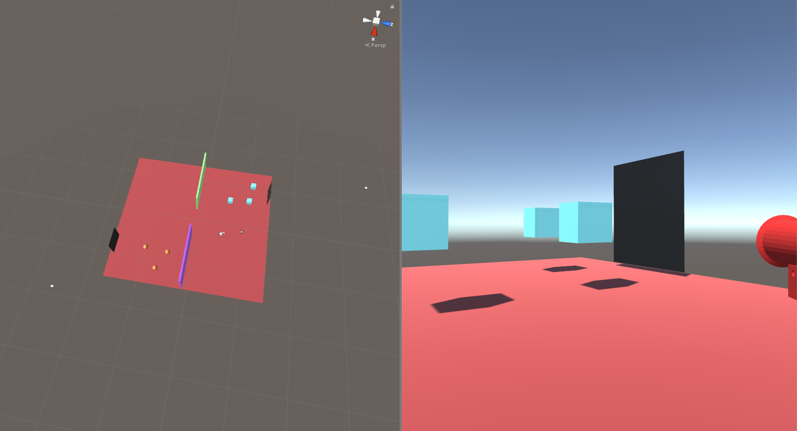

|
|
|
Imagine Valve’s Portal, but users are allowed to create portals of different sizes? What do you think would happen when you stepped through the larger portal and exited the smaller portal?
We are striving to make a VR demo that answers this question by creating a system in Unity to allow users to create portals of varying sizes that will scale the size of objects passed through them (relative to the ratios of their area). We imagine that this system can create unique puzzle-like scenarios where users have to use portals for teleportation and perspective shifts simultaneously. We also find the implementation implications incredibly intriguing from a computer graphics perspective and want to put our Unity / CS 184 skills to the test.
We are striving to put a modern twist on the classic concepts found in Valve’s Portal. Both from a graphics implementation and conceptual perspective, the idea of portals is incredibly intriguing. The main focus of this project will be to create a demo where the user can place multiple portals within the world through which they can place objects, or walk through themselves. However, we will be going a couple of steps further and allowing for the use of portals of different sizes, as well as making the demo playable in first person in VR. The idea behind having portals of different sizes is that the scale of whatever passes through the portal will be adjusted to match the difference in size from the original portal to the new one.
We think this problem is important because it is really cool. Seriously though, this idea just sounds fun and intriguing. That's why we are doing it.
One difficult part of this project will be figuring out how to accurately and realistically map one side of the portal to the other. Another challenge will be to solve recursive portals. Honestly, this whole project is incredibly challenging because the implementation raises A LOT of questions. It would be really arrogant to claim that we already know what the most challenging part is before starting. There are SO MANY conceptual problems you can think of fairly immediately from a game engine perspective. (We've listed some below....)
There isn't really anything to measure. Do portals work? Does it run well enough to match most VR experiences? Is everything smooth? If yes to all of these ---> 100%
Our goals for this checkpoint were very distinct and specific because we had the luxury of understanding where the issues and bugs might happen for the beginning of the project.
1. Setup the Unity Project and Github
2. Create First person controller, gun, and basic scene for debugging
3. Set up the portal classes, methods, and game management scripts for refinment later
4. Implement Portal pairing, camera movement, and portal rendering
5. Modelling
6. Portal Creation: Placement and Sizing
Did we complete all these goals? Keep reading if you want to find out! (We are making this checkpoint website chronological for the purposes of videos and images we took along the way)
Honestly there is nothing noteworthy to show here. Check out our github setup, unity project settings, and gitignore if you want to be really bored.
But we did it (yay? #quarantineCantStopMe)
So the first thing of substance we wanted to do was create the first person controller so we had some sort of reference when actually debugging for moving around the scene. Luckily we are part of the VR DeCal so we were able to steal the basic first person controller from a homework we designed a couple semesters ago (really it's just from Unity's packages). Our homework had slighlty different goals so we spent a bit playing with movement and shooting (we have a flare gun for some weird reason).
We decided on a gun with physical projectiles so that in the future when portals and working we can check that physics and momentum is conserved through it. We redesigned the bullet, added some sounds, and voila! A basic first person controller. The picture below shows the view of the player in the scene with the flare gun. We didn't take much video here of tinkering around because it was boring (also we might've just forgot --> sorry).
Before showing the picture, it's worth mentioning that the background is our first pass at a debugging scene for creating the portals. We eventually switch the layout because the layout in the scene provided made it kind of difficult to debug orientation in the scene.

|
After our first pass with the scene we decided we needed to redo the actual physical layout of the scene so there was some distinct nature to where each of our test portals were located. We needed them on slightly different axes and with different normals so that the testing was actually conclusive. We also wanted different colors and objects so we could know which side we were looking at without having to think too hard. Basically this is all just due diligence for when portal rendering starts getting all wonky.
The results of the final scene is below.

|

|
Also here is some demo pew pew for your viewing pleasure
This is almost all coding so no pretty pictures or videos for y'all here. Basically we just created the general API and abstraction for portal creation, pairing, and rendering. We didn't implement in detail here, but the basics are there (minus rendering). We also set up the game management script which is a staple for Unity development. It's basically the main function for Unity. It's where we create the first two portals by hand and do most of the debugging. Check out the Assets/Scripts folder if you want to visualize what's being talked about here.
This part was definitely the most difficult and interesting. The first thing we had to do was figure out how we wanted the portals to work under the hood. There are about 1000 different ways you can do portals, but we decided to basically pursue a camera rendering route where each portal has a camera that follows it's respective paired portal using local coordinate translation.
Suppose you are looking through Portal 1 at a 2 height, 3 width offset at a 60 degree angle (you = your fps model). For getting the correct camera view in respect to Portal 2, you need to translate these deltas to the other portal using local coordinates. Basically, you would want your paired camera to be at a 2 height, 3 width offset (and 60 degree angle) from Portal 2 with respect to the OPPOSITE normal. This gets into some weird math, but basically if you are in front of your Portal 1, you actually need your paired camera to be BEHIND portal 2 to get the correct viewpoint. This is a simple rotational matrix conversion, but it took a while to figure out and debug.
Just to make sure we are on the same page --> Each portal is going to have a paired camera that is generally behind it's paired portal. I'm going to link some videos showcasing our progress on this below, but it's important to understand that we have these paired cameras so that we can basically emulate our character standing there and render what you would be seeing if you had "preemptively" gone through the portal and could see the other side. There is some image cropping, texture mapping, and rendering stuff related to this we have to talk about later, but ultimately that's the main idea.
The videos below are ordered in chronological development order so you can see some progress. (Generall through... Video One = Debugging one camera attached to the right portal | Video Two = Cameras attached to both portals | Video Three = Rotational perspective after finishing positional )
The next step of the of the project involved actually getting the view of each of the cameras onto each of the portals. This was done by setting the output of each of the cameras to a RenderTexture. We then applied these textures to the material on the quad for each respective portal. This effect is demonstrated in the first video below.
You will notice that they still do not look quite right. The first thing we did to improve the portals was to account for the possibility that there might be objects in between the camera and the back of the portal. We did this by setting the near clip plane of each of the cameras to be the distance from that camera to the portal. This is demonstrated in the second video below where there are gameobjects behind each of the portals, but they are not rendered on the portals themselves.
With the clipping problem out of the way, it was time to fix the FOV problem. With the original implementation, the ENTIRE view of each camera is represented on the portals. To fix this, we created a custom shader for the portals that would take the texture generated from the camera view, but instead of using the entire thing, it only used the part that corresponding to the UV coordinates of each position in screen space for the player. This gave us the cropping effect that can be seen in the third video below. With this custom shader, we were then also able to make the surface of the portals unlit so that they do not reflect light as if they were a flat wall. There is still a problem with viewing a portal through a portal, but we will address that later.
|  | |
There's a likely chance that the player is going to create portals in which they can view theirself, so we decided to add a character model. Unity-Chan is an asset imported from the Unity Asset Store. The asset came with its own player controls script, but because it did not have the functionality that we wanted (move the camera alongside the mouse, use A/D to turn left and right), we imported another Unity asset that had player controls and, with Unity's animator controller, set animations that would go along fluidly with the locomotion. Her name is Unity-Chan!
Our big goal for this project was to be able to create custom-sized portals and place portals on any surface. We used raycasting to be able to select the position that the portal would be; we overlayed a line renderer on that spot as a visual for the player to see the placement of the portal. The player can also adjust the position by holding the correct button. Once they've selected a size and a position, the player can place a portal and its matching pair elsewhere! Controls: Right click to select a surface. Hold right click to adjust size. "B" to instantiate a portal at that position.
We pretty much met all of our goals! There are a couple small things we wish we could've done better / cleaner, but that's how midway checkpoints go. We have a good amount of functionality down and we are looking forward to getting into the actual teleportation stuff down. We also have a couple of bugs to fix in the basic rendering (the clipping plane rectangular issues) by modifying the custom shader.
Check out our milestone video below:
Also, check out our slides!